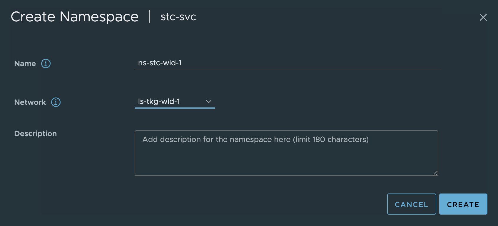

vSphere with Tanzu and HAproxy
Overview
vSphere with Tanzu and HAProxy
Using HAProxy is an option if in need of a an easy and quick way to deploy vSphere with Tanzu. There is no redundancy built into this approach as the HAProxy appliance only consist of one appliance. A support contract is directly with HAProxy not VMware. I would probably recommend this approach for poc, smaller environments, test environments etc. In production environments I would highly recommend NSX Advanced Loadbalancer for many many reasons like resiliency, scalbility and a whole bunch of enterprise features. See my post covering vSphere with Tanzu and NSX-ALB here and here
Before I begin this post I will just quickly go through the two different ways HAProxy can be deployed to support a vSphere with Tanzu deployment. The two options are called Default and Frontend. The difference being how the HAProxy network is configured. Lets start with the Default option: The Default option basically means you will deploy the HAProxy appliance using only 2 network interfaces. One network interface is being used for management and the second one will be a combined interface for both VIP(frontend) and data-network(workload network).

I dont like this approach as it does not give me the option to have a separation between the workload network and the frontend network, meaning there is no distinction networking/firewall wise when restricting traffic from any to the VIP of the kubernetes api. For more information on this topology have a look here in the VMware official documentation.
So I will opt for the second option, Frontend, when using HAProxy in vSphere with Tanzu.

This option will deploy the HAProxy appliance with three network interfaces. A separate interface for management, workload and frontend (VIP/Kubernetes API). When users hit the VIP or the frontend network assigned it is a separate network interface on the HAProxy appliance, and will forward the traffic (using routes internally in the HAProxy) to forward the requests to the correct kubernetes api in the workload network. It also supports any additional workload networks which I will show later. For more information on the Frontend topology head over here
Thats it for the introduction, lets do the actual implementation of this.
Install HAProxy
First thing first, prepare the three network in vCenter using either VDS portgroups or NSX backed overlay segments. 1 portgroup for the management interface, one for the default workload network and one for the HAProxy frontend network. In my setup I will be using this IP information:
- Management network - NSX backed overlay segment: Network = 10.13.10.0/24, GW = 10.13.10.1, HAProxy Interface IP = 10.13.10.199. Routed
- Workload network - VLAN backed VDS portgroup: Network = 10.13.201.0/24, GW = 10.13.201.1, HAProxy Interface IP = 10.13.201.10. Routed
- Frontend network - VLAN backed VDS portgroup: Network = 10.13.200.0/24, GW = 10.13.200.1, HAProxy Interface IP = 10.13.200.10. Routed
When the networks is ready it is time to deploy the HAProxy appliance/vm itself. To deploy the HAProxy I will use the OVA approach described here. Then it is getting hold of the HAProxy OVA to be used for this purpose which can be found here, or directly to the OVA version 0.2.0 here.
Before deploying the OVA prepare the additional information below:
- DNS server = 172.24.3.1
- LoadBalancer IP Range = 10.13.200.32/27 - this is just a range I have defined inside the HAProxy frontend network. The Frontend network is 10.13.200.0/24 (where my HAProxy will use 10.13.200.10) and the range I will make available for HAProxy to use is 10.13.200.32/27 which gives me 30 usable addresses x.x.x.33-x.x.x.62. There is also the option to add more ranges e.g 10.13.200.64/27 and so on.
To save some time I will skip directly to the actual ova deployment from my vCenter server.
HAProxy OVA deployment


The next step below is where I select the network topology, I will here choose Frontend


In the step below I will select my three prepared networks accordingly.

Enter the root password for the appliance/os itself, check Permit Root Login (useful for troubleshooting and for this demo), leave the TLS sections default blank.

Fill in hostname if wanted, DNS server(s) the appliance management ip in CIDR format 10.13.10.199/24 and the gateway 10.13.10.1.

Then it is the workload related network settings. Workload IP 10.13.201.10/24 and gateway 10.13.201.1. The Additional Workload Networks can be ignored (it does not seem to have any effect), I will go through that later adding additional workload networks. Then it is the Frontend IP = 10.13.200.10/24. It does say optional, but its only optional if doing the Default setup with only two nics.

Frontend gateway = 10.13.200.1. Not optional when doing the Frontend setup. Then it is the range you want HAProxy to use for VIP. I have defined a range of 30 usable address by filling in the CIDR 10.13.200.32/27 as below. This can be one of many ranges if you want. Leave the port as default, if not in need of changing it. Then I define a custom API username for the Supervisor to use against the HAProxy, in my case admin.

Then it is the password for the API admin user. The password I have chosen is ..... .... ..

Then do a quick review and make sure everything is there. Click finish and wait.


SSH into the HAProxy appliance
When the appliance has been deployed and powered on, ssh into the HAProxy appliance using its IP address in the management network and using root as username and password defined above.
1ssh root@10.13.10.199
2The authenticity of host '10.13.10.199 (10.13.10.199)' can't be established.
3ED25519 key fingerprint is SHA256:Asefsdfgsdfsdgsdg5kyKHX0.
4This key is not known by any other names
5Are you sure you want to continue connecting (yes/no/[fingerprint])? yes
6Warning: Permanently added '10.13.10.199' (ED25519) to the list of known hosts.
7(root@10.13.10.199) Password:
8 12:06:48 up 2 min, 0 users, load average: 0.15, 0.12, 0.05
9tdnf update info not available yet!
10root@haproxy [ ~ ]#
The reason I want to log in here is because I need the CA.CRT generated so I can tell the Supervisor to use that later on, but also to do some information dump on certain config files that will be good to know about.
The most important part, the certificate. When enabling the Supervisor later I will need the certificate. Grab this by using this command:
1root@haproxy [ ~ ]# cat /etc/haproxy/ca.crt
2-----BEGIN CERTIFICATE-----
3MIIDJ6HD6qCAn3KyQ0KNTJiqT7HgwRvFgZoHcG9vWXjvZy2
4.....................................
5qUOOIbrvQStRTqJl/DjEKi0FyR3lJ1OTOHAbD4YJltSixLkVHRqEH/PY0CbwUNib
6wEkCcibnNLMVLvqvXmyvj0x/Hg==
7-----END CERTIFICATE-----
Then there is a couple of config files that is relevant to know about, it would be interesting to have a look at them now before enabling the supervisor and another look after it has been enabled. So lets have a look now.
I will just run all of them in the same window:
1########## haproxy.cfg ################
2root@haproxy [ ~ ]# cat /etc/haproxy/haproxy.cfg
3global
4 log stdout format raw local0 info
5 chroot /var/lib/haproxy
6 stats socket /run/haproxy.sock user haproxy group haproxy mode 660 level admin expose-fd listeners
7 stats timeout 30s
8 user haproxy
9 group haproxy
10 master-worker
11 # Setting maxconn in the global section is what successfully sets the ulimit on the
12 # host, otherwise we run out of file descriptors (defaulted at 4096).
13 maxconn 60000
14 # This property indicates the number of maximum number of reloads a worker
15 # will survive before being forcefully killed. This number is required to control
16 # the rate at which processes can scale due to the number of reloads outscaling
17 # the rate processes are reaped when all of their connections have been cleaned up.
18 # This number was derived by taking the average virtual memory consumption for a
19 # single HA Proxy process under load, ~28MB, and allocating HA Proxy 3GB out of 4GB
20 # of the total virtual memory space.
21 mworker-max-reloads 100
22
23 # Default SSL material locations
24 ca-base /etc/ssl/certs
25 crt-base /etc/ssl/private
26
27 # Default ciphers to use on SSL-enabled listening sockets.
28 # For more information, see ciphers(1SSL). This list is from:
29 # https://hynek.me/articles/hardening-your-web-servers-ssl-ciphers/
30 # An alternative list with additional directives can be obtained from
31 # https://mozilla.github.io/server-side-tls/ssl-config-generator/?server=haproxy
32 ssl-default-bind-ciphers ECDH+AESGCM:DH+AESGCM:ECDH+AES256:DH+AES256:ECDH+AES128:DH+AES:RSA+AESGCM:RSA+AES:!aNULL:!MD5:!DSS
33 ssl-default-bind-options no-sslv3
34
35defaults
36 mode tcp
37 log global
38 option tcplog
39 option dontlognull
40 option tcp-smart-accept
41 timeout check 5s
42 timeout connect 9s
43 timeout client 10s
44 timeout queue 5m
45 timeout server 10s
46 # tunnel timeout needs to be set at a lowish value to deal with the frequent
47 # reloads invoked by dataplaneapi at scale. With a higher value set, established
48 # connections will hang around and prevent haproxy from killing all off older processes
49 # because those old processes won't terminate those established connections unless
50 # it is told to do so. Having these processes linger for too long can eventually
51 # starve the system of resources as the spawn rate of processes exceeds the death rate.
52 timeout tunnel 5m
53 timeout client-fin 10s
54
55# Stats are disabled by default because enabling them on a non-local IP address
56# would result in allocating a port that could result in a conflict with one
57# of the binds programmed at runtime.
58#
59# To enable stats, uncomment the following section and replace SYSTEM_IP_ADDR
60# with the IP address of the HAProxy host.
61#frontend stats
62# mode http
63# bind SYSTEM_IP_ADDR:8404
64# stats enable
65# stats uri /stats
66# stats refresh 500ms
67# stats hide-version
68# stats show-legends
69
70userlist controller
71 user admin password $dfsdfsdf/mdsfsdfb$6/xsdfsdfsdf379dfsdfMOJ/W1
72##################### haproxy.cfg - no entries yet for any virtual services ###############################
73
74##################### any-ip-routes ###########################
75root@haproxy [ ~ ]# cat /etc/vmware/anyip-routes.cfg
76#
77# Configuration file that contains a line-delimited list of CIDR values
78# that define the network ranges used to bind the load balancer's frontends
79# to virtual IP addresses.
80#
81# * Lines beginning with a comment character, #, are ignored
82# * This file is used by the anyip-routes service
83#
8410.13.200.32/27
85################### any-ip-routes #########################
86
87################## route-tables #######################
88root@haproxy [ ~ ]# cat /etc/vmware/route-tables.cfg
89#
90# Configuration file that contains a line-delimited list of values used to
91# create route tables on which default gateways are defined. This enables
92# the use of IP policy to ensure traffic to interfaces that do not use the
93# default gateway is routed correctly.
94#
95# * Lines beginning with a comment character, #, are ignored
96# * This file is used by the route-tables service
97#
98# Each line that contains a value must adhere to the following,
99# comma-separated format:
100#
101# <TableID>,<TableName>,<MACAddress>,<NetworkCIDR>,<Gateway4>
102#
103# The fields in the above format are as follows:
104#
105# * TableID The route table ID. This value should be an integer between
106# 2-250. Please see /etc/iproute2/rt_tables for a list of the
107# route table IDs currently in use, including reserved IDs.
108#
109# * TableName The name of the route table. This value will be appended
110# to a constant prefix, used to identify route tables managed
111# by the route-tables service.
112#
113# * MACAddress The MAC address of the interface connected to the network
114# specified by NetworkCIDR
115#
116# * NetworkCIDR The CIDR of the network to which the interface by MACAddress
117# is connected
118#
119# * Gateway4 The IPv4 address of the gateway used by the network specified
120# by NetworkCIDR
121#
122# For example, the following lines are valid values:
123#
124# 2,frontend,00:00:00🆎cd:ef,192.168.1.0/24,192.168.1.1
125# 3,workload,00:00:00:12:34:56,192.168.2.0/24,192.168.2.1
126#
127
1282,workload,00:50:56:b4:ca:fd,10.13.201.10/24,10.13.201.1
1292,workload,00:50:56:b4:ca:fd,10.13.201.10/24
1303,frontend,00:50:56:b4:ef:d1,10.13.200.10/24,10.13.200.1
1313,frontend,00:50:56:b4:ef:d1,10.13.200.10/24
132#################################### route-tables ####################
133
134########### iproute2 tables ##################
135root@haproxy [ ~ ]# cat /etc/iproute2/rt_tables
136#
137# reserved values
138#
139255 local
140254 main
141253 default
1420 unspec
143#
144# local
145#
146#1 inr.ruhep
1472 rtctl_workload
1482 rtctl_workload
1493 rtctl_frontend
1503 rtctl_frontend
151################ iproute2 tables ##################
One can also view the current configuration of the HAProxy appliance under vApp Settings in vCenter like this:

This concludes the deployment of the HAProxy appliance, next step is to enable the Supervisor using this HAProxy appliance for the L4 VIPs.
Enable Supervisor in vSphere using HAProxy
Head over to workload management in vCenter and click get started


Sit back and wait.... and wait.....
And after some waiting it should be green and ready and the Supervisor Control Plane IP should be an IP address from the LoadBalancer range:

Now I just want to check the HAProxy config (/etc/haproxy/haproxy.cfg) to see if there has been any update there:
1haproxy.cfg ->
2frontend domain-c8:5071d9d4-373d-49aa-a202-4c4ed81adc3b-kube-system-kube-apiserver-lb-svc
3 mode tcp
4 bind 10.13.200.34:443 name domain-c8:5071d9d4-373d-49aa-a202-4c4ed81adc3b-kube-system-kube-apiserver-lb-svc-10.13.200.34:nginx
5 bind 10.13.200.34:6443 name domain-c8:5071d9d4-373d-49aa-a202-4c4ed81adc3b-kube-system-kube-apiserver-lb-svc-10.13.200.34:kube-apiserver
6 log-tag domain-c8:5071d9d4-373d-49aa-a202-4c4ed81adc3b-kube-system-kube-apiserver-lb-svc
7 option tcplog
8 use_backend domain-c8:5071d9d4-373d-49aa-a202-4c4ed81adc3b-kube-system-kube-apiserver-lb-svc-kube-apiserver if { dst_port 6443 }
9 use_backend domain-c8:5071d9d4-373d-49aa-a202-4c4ed81adc3b-kube-system-kube-apiserver-lb-svc-nginx if { dst_port 443 }
10
11frontend domain-c8:5071d9d4-373d-49aa-a202-4c4ed81adc3b-vmware-system-csi-vsphere-csi-controller
12 mode tcp
13 bind 10.13.200.33:2112 name domain-c8:5071d9d4-373d-49aa-a202-4c4ed81adc3b-vmware-system-csi-vsphere-csi-controller-10.13.200.33:ctlr
14 bind 10.13.200.33:2113 name domain-c8:5071d9d4-373d-49aa-a202-4c4ed81adc3b-vmware-system-csi-vsphere-csi-controller-10.13.200.33:syncer
15 log-tag domain-c8:5071d9d4-373d-49aa-a202-4c4ed81adc3b-vmware-system-csi-vsphere-csi-controller
16 option tcplog
17 use_backend domain-c8:5071d9d4-373d-49aa-a202-4c4ed81adc3b-vmware-system-csi-vsphere-csi-controller-syncer if { dst_port 2113 }
18 use_backend domain-c8:5071d9d4-373d-49aa-a202-4c4ed81adc3b-vmware-system-csi-vsphere-csi-controller-ctlr if { dst_port 2112 }
19
20backend domain-c8:5071d9d4-373d-49aa-a202-4c4ed81adc3b-kube-system-kube-apiserver-lb-svc-kube-apiserver
21 mode tcp
22 balance roundrobin
23 option tcp-check
24 log-tag domain-c8:5071d9d4-373d-49aa-a202-4c4ed81adc3b-kube-system-kube-apiserver-lb-svc-kube-apiserver
25 server domain-c8:5071d9d4-373d-49aa-a202-4c4ed81adc3b-kube-system-kube-apiserver-lb-svc-10.13.201.20:6443 10.13.201.20:6443 check weight 100 verify none
26 server domain-c8:5071d9d4-373d-49aa-a202-4c4ed81adc3b-kube-system-kube-apiserver-lb-svc-10.13.201.21:6443 10.13.201.21:6443 check weight 100 verify none
27 server domain-c8:5071d9d4-373d-49aa-a202-4c4ed81adc3b-kube-system-kube-apiserver-lb-svc-10.13.201.22:6443 10.13.201.22:6443 check weight 100 verify none
28
29backend domain-c8:5071d9d4-373d-49aa-a202-4c4ed81adc3b-kube-system-kube-apiserver-lb-svc-nginx
30 mode tcp
31 balance roundrobin
32 option tcp-check
33 log-tag domain-c8:5071d9d4-373d-49aa-a202-4c4ed81adc3b-kube-system-kube-apiserver-lb-svc-nginx
34 server domain-c8:5071d9d4-373d-49aa-a202-4c4ed81adc3b-kube-system-kube-apiserver-lb-svc-10.13.201.20:443 10.13.201.20:443 check weight 100 verify none
35 server domain-c8:5071d9d4-373d-49aa-a202-4c4ed81adc3b-kube-system-kube-apiserver-lb-svc-10.13.201.21:443 10.13.201.21:443 check weight 100 verify none
36 server domain-c8:5071d9d4-373d-49aa-a202-4c4ed81adc3b-kube-system-kube-apiserver-lb-svc-10.13.201.22:443 10.13.201.22:443 check weight 100 verify none
37
38backend domain-c8:5071d9d4-373d-49aa-a202-4c4ed81adc3b-vmware-system-csi-vsphere-csi-controller-ctlr
39 mode tcp
40 balance roundrobin
41 option tcp-check
42 log-tag domain-c8:5071d9d4-373d-49aa-a202-4c4ed81adc3b-vmware-system-csi-vsphere-csi-controller-ctlr
43 server domain-c8:5071d9d4-373d-49aa-a202-4c4ed81adc3b-vmware-system-csi-vsphere-csi-controller-10.13.201.20:2112 10.13.201.20:2112 check weight 100 verify none
44 server domain-c8:5071d9d4-373d-49aa-a202-4c4ed81adc3b-vmware-system-csi-vsphere-csi-controller-10.13.201.21:2112 10.13.201.21:2112 check weight 100 verify none
45 server domain-c8:5071d9d4-373d-49aa-a202-4c4ed81adc3b-vmware-system-csi-vsphere-csi-controller-10.13.201.22:2112 10.13.201.22:2112 check weight 100 verify none
46
47backend domain-c8:5071d9d4-373d-49aa-a202-4c4ed81adc3b-vmware-system-csi-vsphere-csi-controller-syncer
48 mode tcp
49 balance roundrobin
50 option tcp-check
51 log-tag domain-c8:5071d9d4-373d-49aa-a202-4c4ed81adc3b-vmware-system-csi-vsphere-csi-controller-syncer
52 server domain-c8:5071d9d4-373d-49aa-a202-4c4ed81adc3b-vmware-system-csi-vsphere-csi-controller-10.13.201.20:2113 10.13.201.20:2113 check weight 100 verify none
53 server domain-c8:5071d9d4-373d-49aa-a202-4c4ed81adc3b-vmware-system-csi-vsphere-csi-controller-10.13.201.21:2113 10.13.201.21:2113 check weight 100 verify none
54 server domain-c8:5071d9d4-373d-49aa-a202-4c4ed81adc3b-vmware-system-csi-vsphere-csi-controller-10.13.201.22:2113 10.13.201.22:2113 check weight 100 verify none
So it seems. All the virtual services for the Supervisor Cluster entries has been added. I should now be able to reach the Kubernetes API endpoint and log-in using the loadbalancer/external ip provided by HAProxy 10.13.200.34
1vsphere-kubectl login --server="10.13.200.34" --insecure-skip-tls-verify --vsphere-username=andreasm@cpod-domain.net
2
3KUBECTL_VSPHERE_PASSWORD environment variable is not set. Please enter the password below
4Password:
5Logged in successfully.
6
7You have access to the following contexts:
8 10.13.200.34
9
10If the context you wish to use is not in this list, you may need to try
11logging in again later, or contact your cluster administrator.
12
13To change context, use `kubectl config use-context <workload name>`
Now I can just go ahead and deploy my first workload cluster and get started doing some Kubernetes'ing using the default Workload Network defined. Then it will be like the diagram below:

But instead I want to create a new vSphere Namespace in a new subnet/workload network and deploy a workload cluster there. Lets see how this works out.
Add additional workload network
Assuming I have certain requirement that some Workload Clusters needs to be in separate IP subnets, such as exhausted existing default workload network, ip separation, security zones etc. I need to have the ability to define and add additional workload networks.
I already have a new workload network defined. Its configured using NSX overlay segment has the following CIDR: 10.13.21.0/24. The only requirement seems to be needed for HAProxy to use this new network I just need to make sure the Workload network can reach the additional networks I add. So routing between the defautl workload network and any additional workload networks added needs to be in place. No other configuration is needed on the HAProxy side. The diagram below tries to illustrate a second workload network:

When a new workload cluster is provisioned in the new workload network the VIP/LoadBalancer range will be the same, but instead HAProxy needs to route the traffic from its Workload network to the new workload network. Its not HAProxy that is responsible for the actual routing, that is something that needs to be in place in the infrastructure. HAProxy receives the traffic on the Frontend/LoadBalancer network interface, forwards it to the workload interface which then uses its configured gateway to forward the traffic to the new workload network where there is a router in between that knows about those network and can forward it to the correct destination and back again.
Lets try to deploy a workload cluster in the new workload network above, creating a new vSphere Namespace with this network.

Click ADD and populate the necessary fields

Create the namespace using and select the new network:
Now, deploy a cluster in this namespace:
1apiVersion: cluster.x-k8s.io/v1beta1
2kind: Cluster
3metadata:
4 name: cluster-2
5 namespace: ns-stc-wld-1
6spec:
7 clusterNetwork:
8 services:
9 cidrBlocks: ["20.30.0.0/16"]
10 pods:
11 cidrBlocks: ["20.40.0.0/16"]
12 serviceDomain: "cluster.local"
13 topology:
14 class: tanzukubernetescluster
15 version: v1.26.5---vmware.2-fips.1-tkg.1
16 controlPlane:
17 replicas: 1
18 metadata:
19 annotations:
20 run.tanzu.vmware.com/resolve-os-image: os-name=ubuntu
21 workers:
22 machineDeployments:
23 - class: node-pool
24 name: node-pool-01
25 replicas: 2
26 metadata:
27 annotations:
28 run.tanzu.vmware.com/resolve-os-image: os-name=ubuntu
29 variables:
30 - name: vmClass
31 value: best-effort-small
32 - name: storageClass
33 value: vsan-default-storage-policy
1kubectl apply -f cluster-2.yaml
2cluster.cluster.x-k8s.io/cluster-2 created
And here the cluster has been deployed:

This looks very promising, as the first indicator of something not working is it only deploys the first control plane and stops. Let me log into the cluster and check the Kubernetes API access also.
1andreasm@ubuntu02:~$ k get nodes -o wide
2NAME STATUS ROLES AGE VERSION INTERNAL-IP EXTERNAL-IP OS-IMAGE KERNEL-VERSION CONTAINER-RUNTIME
3cluster-2-8tq8q-mvj5d Ready control-plane 15m v1.26.5+vmware.2-fips.1 10.13.21.20 <none> Ubuntu 20.04.6 LTS 5.4.0-155-generic containerd://1.6.18-1-gdbc99e5b1
4cluster-2-node-pool-01-jqdms-b8fd8b5bb-7mjkh Ready <none> 11m v1.26.5+vmware.2-fips.1 10.13.21.22 <none> Ubuntu 20.04.6 LTS 5.4.0-155-generic containerd://1.6.18-1-gdbc99e5b1
5cluster-2-node-pool-01-jqdms-b8fd8b5bb-cxjqn Ready <none> 11m v1.26.5+vmware.2-fips.1 10.13.21.21 <none> Ubuntu 20.04.6 LTS 5.4.0-155-generic containerd://1.6.18-1-gdbc99e5b1
The nodes are using IP address in the new workload network (10.13.21.0/24) and below we can see the loadbalanced kubernetes api for this workload cluster has been assigned the ip 10.13.200.35 from the HAProxy loadbalancer range.
And a quick look at the haproxy.cfg file again:
1frontend domain-c8:5071d9d4-373d-49aa-a202-4c4ed81adc3b-ns-stc-wld-1-cluster-2-control-plane-service
2 mode tcp
3 bind 10.13.200.35:6443 name domain-c8:5071d9d4-373d-49aa-a202-4c4ed81adc3b-ns-stc-wld-1-cluster-2-control-plane-service-10.13.200.35:apiserver
4 log-tag domain-c8:5071d9d4-373d-49aa-a202-4c4ed81adc3b-ns-stc-wld-1-cluster-2-control-plane-service
5 option tcplog
6 use_backend domain-c8:5071d9d4-373d-49aa-a202-4c4ed81adc3b-ns-stc-wld-1-cluster-2-control-plane-service-apiserver if { dst_port 6443 }
The entry for the new Cluster-2 has been added.
Restore from a deleted/crashed/killed HAProxy appliance
This exercise will involve deleting my existing HAProxy appliance. In the meantime I will loose access to my Supervisor cluster and any other workload cluster that has been deployed. I will have to re-deploy the HAProxy again, following the exact same deployment procedure as described above and update my Supervisor so it can reconfigure it back as it was before I deleted the old HAProxy deployment. So lets start by deleting the existing HAProxy appliance.

Recent task

Now that is gone.
Lets check my access to the Supervisor API:
1andreasm@ubuntu02:~$ k get pods -A
2Unable to connect to the server: dial tcp 10.13.200.34:6443: connect: no route to host
Not good. So lets redeploy the HAProxy
Its deployed

Power it on, can I reach the Supervisor API?
1andreasm@ubuntu02:~$ k get pods -A
2The connection to the server 10.13.200.34:6443 was refused - did you specify the right host or port?
No luck yet.
Log in with SSH and check the HAProxy config:
1aandreasm@linuxvm02:~/.ssh$ ssh root@10.13.10.199
2The authenticity of host '10.13.10.199 (10.13.10.199)' can't be established.
3ED25519 key fingerprint is SHA256:BJGSoo5icUWW7+s2FIKBQV+bg33ZOhk10s9+LFoQgXs.
4This key is not known by any other names
5Are you sure you want to continue connecting (yes/no/[fingerprint])? yes
6Warning: Permanently added '10.13.10.199' (ED25519) to the list of known hosts.
7(root@10.13.10.199) Password:
8 08:09:36 up 0 min, 0 users, load average: 0.09, 0.03, 0.01
9tdnf update info not available yet!
10root@haproxy [ ~ ]#
11root@haproxy [ ~ ]# cat /etc/haproxy/haproxy.cfg
12global
13 log stdout format raw local0 info
14 chroot /var/lib/haproxy
15 stats socket /run/haproxy.sock user haproxy group haproxy mode 660 level admin expose-fd listeners
16 stats timeout 30s
17 user haproxy
18 group haproxy
19 master-worker
20 # Setting maxconn in the global section is what successfully sets the ulimit on the
21 # host, otherwise we run out of file descriptors (defaulted at 4096).
22 maxconn 60000
23 # This property indicates the number of maximum number of reloads a worker
24 # will survive before being forcefully killed. This number is required to control
25 # the rate at which processes can scale due to the number of reloads outscaling
26 # the rate processes are reaped when all of their connections have been cleaned up.
27 # This number was derived by taking the average virtual memory consumption for a
28 # single HA Proxy process under load, ~28MB, and allocating HA Proxy 3GB out of 4GB
29 # of the total virtual memory space.
30 mworker-max-reloads 100
31
32 # Default SSL material locations
33 ca-base /etc/ssl/certs
34 crt-base /etc/ssl/private
35
36 # Default ciphers to use on SSL-enabled listening sockets.
37 # For more information, see ciphers(1SSL). This list is from:
38 # https://hynek.me/articles/hardening-your-web-servers-ssl-ciphers/
39 # An alternative list with additional directives can be obtained from
40 # https://mozilla.github.io/server-side-tls/ssl-config-generator/?server=haproxy
41 ssl-default-bind-ciphers ECDH+AESGCM:DH+AESGCM:ECDH+AES256:DH+AES256:ECDH+AES128:DH+AES:RSA+AESGCM:RSA+AES:!aNULL:!MD5:!DSS
42 ssl-default-bind-options no-sslv3
43
44defaults
45 mode tcp
46 log global
47 option tcplog
48 option dontlognull
49 option tcp-smart-accept
50 timeout check 5s
51 timeout connect 9s
52 timeout client 10s
53 timeout queue 5m
54 timeout server 10s
55 # tunnel timeout needs to be set at a lowish value to deal with the frequent
56 # reloads invoked by dataplaneapi at scale. With a higher value set, established
57 # connections will hang around and prevent haproxy from killing all off older processes
58 # because those old processes won't terminate those established connections unless
59 # it is told to do so. Having these processes linger for too long can eventually
60 # starve the system of resources as the spawn rate of processes exceeds the death rate.
61 timeout tunnel 5m
62 timeout client-fin 10s
63
64# Stats are disabled by default because enabling them on a non-local IP address
65# would result in allocating a port that could result in a conflict with one
66# of the binds programmed at runtime.
67#
68# To enable stats, uncomment the following section and replace SYSTEM_IP_ADDR
69# with the IP address of the HAProxy host.
70#frontend stats
71# mode http
72# bind SYSTEM_IP_ADDR:8404
73# stats enable
74# stats uri /stats
75# stats refresh 500ms
76# stats hide-version
77# stats show-legends
78
79# ###No entries.....
Certainly a new appliance, not the same authenticity fingerprint. But no entries.. Now I will head over to the Workload Management in vCenter and update the certificate under the LoadBalancer section with the new certificate from the newly deployed HAProxy.
Note.. If I had copied out the cert and key from the old one I could have imported them back again during deployment.

Click save. I still cant reach the my kubernetes api endpoints. The next I need to to is just restart the WCP service from the vCenter VAMI.

Scroll all the way down to find the WCP service, select it, scroll all the way up again.

Click restart.

After the service has been restarted having a look inside tha haproxy.cfg file again now:
1frontend domain-c8:5071d9d4-373d-49aa-a202-4c4ed81adc3b-kube-system-kube-apiserver-lb-svc
2 mode tcp
3 bind 10.13.200.34:443 name domain-c8:5071d9d4-373d-49aa-a202-4c4ed81adc3b-kube-system-kube-apiserver-lb-svc-10.13.200.34:nginx
4 bind 10.13.200.34:6443 name domain-c8:5071d9d4-373d-49aa-a202-4c4ed81adc3b-kube-system-kube-apiserver-lb-svc-10.13.200.34:kube-apiserver
5 log-tag domain-c8:5071d9d4-373d-49aa-a202-4c4ed81adc3b-kube-system-kube-apiserver-lb-svc
6 option tcplog
7 use_backend domain-c8:5071d9d4-373d-49aa-a202-4c4ed81adc3b-kube-system-kube-apiserver-lb-svc-nginx if { dst_port 443 }
8 use_backend domain-c8:5071d9d4-373d-49aa-a202-4c4ed81adc3b-kube-system-kube-apiserver-lb-svc-kube-apiserver if { dst_port 6443 }
9
10frontend domain-c8:5071d9d4-373d-49aa-a202-4c4ed81adc3b-ns-stc-wld-1-cluster-2-control-plane-service
11 mode tcp
12 bind 10.13.200.35:6443 name domain-c8:5071d9d4-373d-49aa-a202-4c4ed81adc3b-ns-stc-wld-1-cluster-2-control-plane-service-10.13.200.35:apiserver
13 log-tag domain-c8:5071d9d4-373d-49aa-a202-4c4ed81adc3b-ns-stc-wld-1-cluster-2-control-plane-service
14 option tcplog
15 use_backend domain-c8:5071d9d4-373d-49aa-a202-4c4ed81adc3b-ns-stc-wld-1-cluster-2-control-plane-service-apiserver if { dst_port 6443 }
16
17frontend domain-c8:5071d9d4-373d-49aa-a202-4c4ed81adc3b-vmware-system-csi-vsphere-csi-controller
18 mode tcp
19 bind 10.13.200.33:2112 name domain-c8:5071d9d4-373d-49aa-a202-4c4ed81adc3b-vmware-system-csi-vsphere-csi-controller-10.13.200.33:ctlr
20 bind 10.13.200.33:2113 name domain-c8:5071d9d4-373d-49aa-a202-4c4ed81adc3b-vmware-system-csi-vsphere-csi-controller-10.13.200.33:syncer
21 log-tag domain-c8:5071d9d4-373d-49aa-a202-4c4ed81adc3b-vmware-system-csi-vsphere-csi-controller
22 option tcplog
23 use_backend domain-c8:5071d9d4-373d-49aa-a202-4c4ed81adc3b-vmware-system-csi-vsphere-csi-controller-syncer if { dst_port 2113 }
24 use_backend domain-c8:5071d9d4-373d-49aa-a202-4c4ed81adc3b-vmware-system-csi-vsphere-csi-controller-ctlr if { dst_port 2112 }
25
26backend domain-c8:5071d9d4-373d-49aa-a202-4c4ed81adc3b-kube-system-kube-apiserver-lb-svc-kube-apiserver
27 mode tcp
28 balance roundrobin
29 option tcp-check
30 log-tag domain-c8:5071d9d4-373d-49aa-a202-4c4ed81adc3b-kube-system-kube-apiserver-lb-svc-kube-apiserver
31 server domain-c8:5071d9d4-373d-49aa-a202-4c4ed81adc3b-kube-system-kube-apiserver-lb-svc-10.13.201.20:6443 10.13.201.20:6443 check weight 100 verify none
32 server domain-c8:5071d9d4-373d-49aa-a202-4c4ed81adc3b-kube-system-kube-apiserver-lb-svc-10.13.201.21:6443 10.13.201.21:6443 check weight 100 verify none
33 server domain-c8:5071d9d4-373d-49aa-a202-4c4ed81adc3b-kube-system-kube-apiserver-lb-svc-10.13.201.22:6443 10.13.201.22:6443 check weight 100 verify none
34
35backend domain-c8:5071d9d4-373d-49aa-a202-4c4ed81adc3b-kube-system-kube-apiserver-lb-svc-nginx
36 mode tcp
37 balance roundrobin
38 option tcp-check
39 log-tag domain-c8:5071d9d4-373d-49aa-a202-4c4ed81adc3b-kube-system-kube-apiserver-lb-svc-nginx
40 server domain-c8:5071d9d4-373d-49aa-a202-4c4ed81adc3b-kube-system-kube-apiserver-lb-svc-10.13.201.20:443 10.13.201.20:443 check weight 100 verify none
41 server domain-c8:5071d9d4-373d-49aa-a202-4c4ed81adc3b-kube-system-kube-apiserver-lb-svc-10.13.201.21:443 10.13.201.21:443 check weight 100 verify none
42 server domain-c8:5071d9d4-373d-49aa-a202-4c4ed81adc3b-kube-system-kube-apiserver-lb-svc-10.13.201.22:443 10.13.201.22:443 check weight 100 verify none
43
44backend domain-c8:5071d9d4-373d-49aa-a202-4c4ed81adc3b-ns-stc-wld-1-cluster-2-control-plane-service-apiserver
45 mode tcp
46 balance roundrobin
47 option tcp-check
48 log-tag domain-c8:5071d9d4-373d-49aa-a202-4c4ed81adc3b-ns-stc-wld-1-cluster-2-control-plane-service-apiserver
49 server domain-c8:5071d9d4-373d-49aa-a202-4c4ed81adc3b-ns-stc-wld-1-cluster-2-control-plane-service-10.13.21.20:6443 10.13.21.20:6443 check weight 100 verify none
50
51backend domain-c8:5071d9d4-373d-49aa-a202-4c4ed81adc3b-vmware-system-csi-vsphere-csi-controller-ctlr
52 mode tcp
53 balance roundrobin
54 option tcp-check
55 log-tag domain-c8:5071d9d4-373d-49aa-a202-4c4ed81adc3b-vmware-system-csi-vsphere-csi-controller-ctlr
56 server domain-c8:5071d9d4-373d-49aa-a202-4c4ed81adc3b-vmware-system-csi-vsphere-csi-controller-10.13.201.20:2112 10.13.201.20:2112 check weight 100 verify none
57 server domain-c8:5071d9d4-373d-49aa-a202-4c4ed81adc3b-vmware-system-csi-vsphere-csi-controller-10.13.201.21:2112 10.13.201.21:2112 check weight 100 verify none
58 server domain-c8:5071d9d4-373d-49aa-a202-4c4ed81adc3b-vmware-system-csi-vsphere-csi-controller-10.13.201.22:2112 10.13.201.22:2112 check weight 100 verify none
59
60backend domain-c8:5071d9d4-373d-49aa-a202-4c4ed81adc3b-vmware-system-csi-vsphere-csi-controller-syncer
61 mode tcp
62 balance roundrobin
63 option tcp-check
64 log-tag domain-c8:5071d9d4-373d-49aa-a202-4c4ed81adc3b-vmware-system-csi-vsphere-csi-controller-syncer
65 server domain-c8:5071d9d4-373d-49aa-a202-4c4ed81adc3b-vmware-system-csi-vsphere-csi-controller-10.13.201.20:2113 10.13.201.20:2113 check weight 100 verify none
66 server domain-c8:5071d9d4-373d-49aa-a202-4c4ed81adc3b-vmware-system-csi-vsphere-csi-controller-10.13.201.21:2113 10.13.201.21:2113 check weight 100 verify none
67 server domain-c8:5071d9d4-373d-49aa-a202-4c4ed81adc3b-vmware-system-csi-vsphere-csi-controller-10.13.201.22:2113 10.13.201.22:2113 check weight 100 verify none
68root@haproxy [ ~ ]#
All my entries are back, and I can reach my kubernetes cluster again:
1andreasm@ubuntu02:~$ k get nodes
2NAME STATUS ROLES AGE VERSION
342344c0c03ff6c1cf443328504169cbe Ready control-plane,master 19h v1.25.6+vmware.wcp.2
44234cc01880600b11de8b894be0c2a30 Ready control-plane,master 19h v1.25.6+vmware.wcp.2
54234d1cd346addba50a751b3cbdfd5ed Ready control-plane,master 19h v1.25.6+vmware.wcp.2
6esx01.cpod.domain.net Ready agent 18h v1.25.6-sph-cf2e16c
7esx02.cpod.domain.net Ready agent 18h v1.25.6-sph-cf2e16c
8esx03.cpod.domain.net Ready agent 18h v1.25.6-sph-cf2e16c
9esx04.cpod.domain.net Ready agent 18h v1.25.6-sph-cf2e16c
10
11andreasm@ubuntu02:~$ k config use-context cluster-2
12Switched to context "cluster-2".
13andreasm@ubuntu02:~$ k get nodes -o wide
14NAME STATUS ROLES AGE VERSION INTERNAL-IP EXTERNAL-IP OS-IMAGE KERNEL-VERSION CONTAINER-RUNTIME
15cluster-2-8tq8q-mvj5d Ready control-plane 17h v1.26.5+vmware.2-fips.1 10.13.21.20 <none> Ubuntu 20.04.6 LTS 5.4.0-155-generic containerd://1.6.18-1-gdbc99e5b1
16cluster-2-node-pool-01-jqdms-b8fd8b5bb-klqff Ready <none> 5m18s v1.26.5+vmware.2-fips.1 10.13.21.23 <none> Ubuntu 20.04.6 LTS 5.4.0-155-generic containerd://1.6.18-1-gdbc99e5b1
17cluster-2-node-pool-01-jqdms-b8fd8b5bb-m76rf Ready <none> 5m18s v1.26.5+vmware.2-fips.1 10.13.21.22 <none> Ubuntu 20.04.6 LTS 5.4.0-155-generic containerd://1.6.18-1-gdbc99e5b1
All services back up again.
This concludes this post. Thanks for reading.